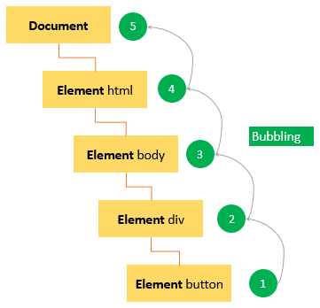

1. What is DOM? What is the purpose of DOM
DOM - The Document Object Model is a programming interface for web documents. It represents the page in such a way that programs can change the document structure, style and content. DOM represents the document as nodes, objects and arrayLists such a way that programming languages can interact with the page.

Dom is not a programming language, but without it, the JavaScript language wouldn't have any model or notion of web pages, HTML documents, SVG documents, and their component parts.
2. How to select elements from DOM
DOM - The Document Object Model represents the document as nodes, objects and arrayLists such a way that programming languages can interact with the page. There are 5 ways in which elements can be selected in a DOM using selectors.
1. getElementsByTagName() : This method returns all the elements that matches the specified Tag name.
2. getElementsByClassName() : This method returns all the elements that matches the specified Class name.
3. getElementById() : This method returns all the elements that matches the specified unique id.
4. querySelectors() : This one returns the first element that matches the specified CSS selector in the document.
5. querySelectorAll() : This method returns all the elements that match the specified CSS selector in the document.
3. What is event bubble?
Event bubbling is a method of event propagation in the HTML DOM API when an event is in an element inside another element, and both elements have registered a handle to that event. It is one way that events are handled in the browser. It directs an event to it's target. A bubbling event goes from the target element straight up.
4. What is callback function? Why is it used for?
A callback function is a function passed into another function as an argument, which is then invoked inside the outer function to complete some kind of routine or action.
Callback functions are needed because many JavaScript actions are asynchronous. Instead, it executes in the background while the rest of the code runs. A callback function's purpose is to execute code in response to an event.